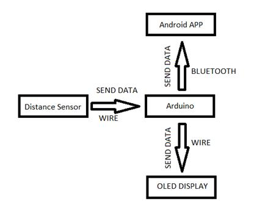
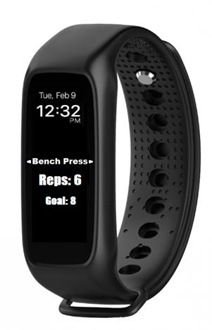
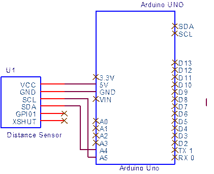
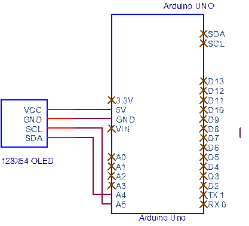

ПРОЕКТ
1. За проекта
Фитнес гривната е предназначена да ни помага при изпълнение на определени фитнес упражнения, както във фитнес залата, така и у дома. Идеята е, тя да следи, контролира формата на изпълнение и документира повторенията на упражненията. По този начин може да следим прогреса ни във фитнес залата или у дома.
1.1. Начин на работа
Има сензор, който брои повторенията на избраното от нас упражнение.
От дисплея на гривната или приложението на телефона ще можем да сменяме различните упражнения.
За всяко упражнение, сензорът е настроен различно.
Arduino-то ще изпраща информация от сензора чрез Bluetooth на телефона ни и ще записва тази информация по определен начин в памета на устройството.
По време на упражнението ще можем да видиме на дисплея броя на повторенията .

1.2. Желан търговски вид

1.3. Компоненти за проекта
· Arduino Uno / Arduino Pro Mini
· Distance Sensor – VL53L0X
· Bluetooth module – HC-06
2. Arduino Uno / Arduino Pro Mini
3. Distance Sensor – VL53L0X
3.1. Технически характеристики
Отворете PDF-а тук .
3.2. Схема

3.3. Начин на свързване
VCC – 5V
GND – GND
SCL – A5
SDA – A4
4. 0.96 OLED 128x64 IIC
4.1. Технически характеристики
Отворете PDF-атук
4.2. Схема

4.3. Начин на свързване
VCC – 5V
GND – GND
SCL – A5
SDA – A4
5. Bluetooth module – HC-06
6. Software – App Inventor